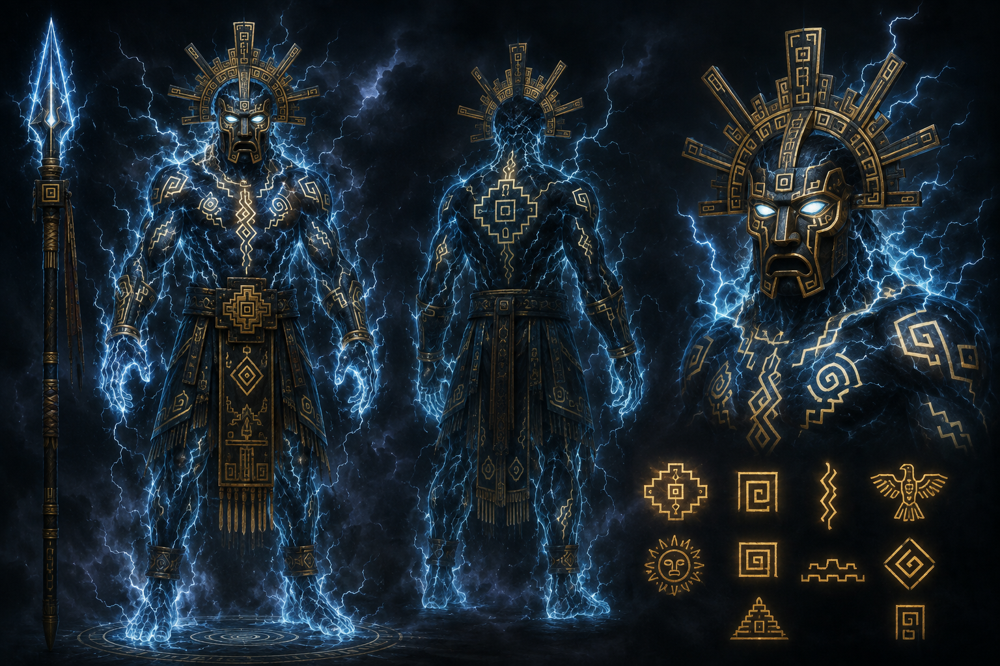

Mundo ordinario
La comunidad vive de sus cultivos.
DESARROLLO DE SOFTWARE · PROYECTO DIGITAL
Una reinterpretación audiovisual de un relato inspirado en la tradición andina: la sequía, Amaru y el encuentro con Illapa, el dios del trueno. Del mito nace una pregunta moderna: ¿cómo podemos proteger el agua usando tecnología?

DEL RELATO A LA EXPERIENCIA
El relato comienza con una comunidad afectada por la sequía. En la reinterpretación actual, esa misma necesidad se transforma en una oportunidad para diseñar una herramienta digital.
EL RELATO
Cuenta la tradición de nuestra historia que, en lo alto de las montañas, vivía Illapa, el dios del trueno. Desde las nubes observaba las tierras y protegía a los pueblos, enviándoles lluvia para alimentar sus cultivos.
Pero un año, los hombres dejaron de respetar las montañas y los ríos. Illapa se enfureció y cerró las puertas del cielo. El sol quemó los campos y una gran sequía cubrió el altiplano.
Un joven guerrero llamado Amaru decidió subir hasta la montaña sagrada para pedir una oportunidad para su pueblo. Durante el camino atravesó tormentas, ríos crecidos y oscuras cavernas.
Al llegar a la cima encontró a Illapa, sosteniendo su poderosa lanza de rayos. El joven no pidió poder. Recordó que la tierra no pertenece a los hombres: los hombres pertenecen a la tierra.
Illapa guardó silencio. Entonces levantó su lanza hacia el cielo. Un enorme trueno sacudió las montañas y comenzaron a caer las primeras gotas de lluvia.
02 · EXPERIENCIA AUDIOVISUAL
03 · CAMINO DEL HÉROE
Diez etapas convierten el relato en una experiencia narrativa clara.
La comunidad vive de sus cultivos.
La sequía amenaza la vida del pueblo.
Amaru enfrenta un camino desconocido.
Recibe orientación y un objeto ceremonial.
Decide subir a la montaña sagrada.
Cruza ríos, rocas, cuevas y tormentas.
Se encuentra frente a Illapa.
La lluvia regresa a la tierra.
La comunidad recupera sus cultivos.
El aprendizaje inspira una solución digital.
04 · REINTERPRETACIÓN ACTUAL
El problema del relato era la falta de lluvia. Hoy no podemos pedirle al cielo que resuelva por sí solo la escasez. Podemos observar los datos, anticiparnos y tomar mejores decisiones.
MONITOREO AGRÍCOLA
05 · PROCESO DE IA
La IA se utilizó como herramienta de apoyo, no como un proceso automático único.
Se definió la estética andina, los personajes y el movimiento.
Se generaron imágenes y clips de cinco segundos.
La IA podía cambiar rostros, ropa o proporciones.
Se guardaron personajes y se reutilizaron fotogramas para mantener continuidad.
Continuar EXACTAMENTE desde el último fotograma. Utilizar el personaje guardado "Amaru". Mantener rostro, cabello, ropa, colores y proporciones. No rediseñar al personaje. Conservar la estética cinematográfica de los Andes bolivianos.
06 · CRÉDITOS